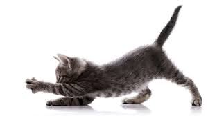

Gatinhos
O conteudo será sobre gatos e como ajudam nós humanos e mostrar a fofura destes bichinos que nos alegram tanto.

Por que eles nos ajudam tanto?
- Os gatos reduzem os níveis de stress;
- Os gatos são bons para o coração;
- Os gatos ajudam a curar os nossos ossos;
- Os gatos reduzem o risco de alergias nas crianças;
- Os gatos podem ser terapeutas;
- Os gatos são sensíveis.

Menu de navegação
Gato siamês
Gato azul russo
Agradecimento